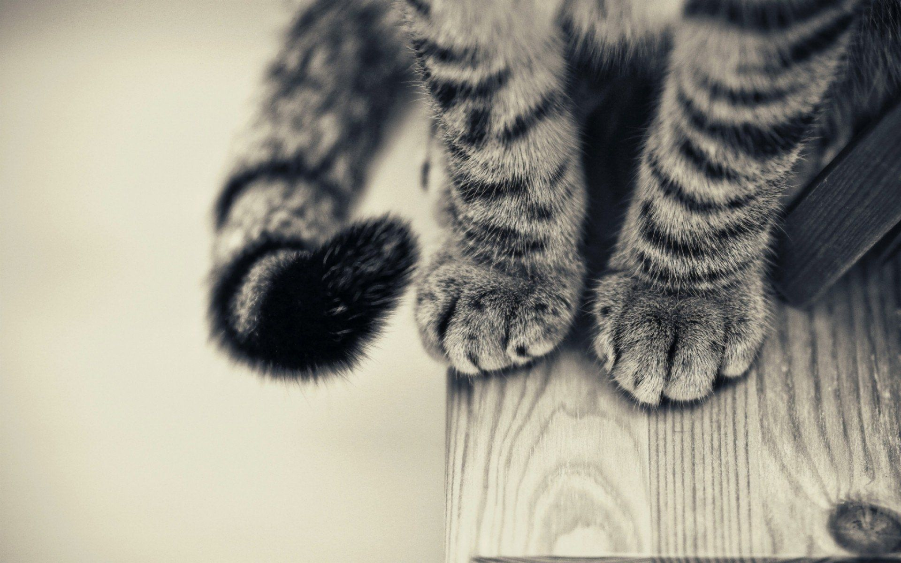

<!DOCTYPE html>
<html lang="en">

<head>
    <meta charset="UTF-8">
    <meta http-equiv="X-UA-Compatible" content="IE=edge">
    <meta name="viewport" content="width=device-width, initial-scale=1.0">
    <title>yiming9859</title>
    <link href="index.css" rel="stylesheet" type="text/css" />
</head>

<body>
    <!-- <div class="home">
        <div class="content">
            <div class="stars"></div>
            
        </div>
    </div> -->
    <canvas id="can" width="500" height="500"></canvas>
    <script>
        var can=document.getElementById('can')//获取对象
        var pen=can.getContext('2d');//在画布中创建一个2d画笔

        //x为水平方向的坐标    .fillRect(x,y,width,height)
       //y为垂直方向的坐标
        var x=y=0;
        pen.fillRect(x,y,100,100); //绘制一个大小为100'被填充的'矩形

        document.onkeydown=function(even){     //绑定按键事件
            if(even.keyCode>=37&&even.keyCode<=40){    //判断按下的键值是否在37~40之间
                pen.clearRect(x,y,100,100);       //擦除上一个图形
                switch(even.keyCode){             //匹配按下的键值
                    case 37:x=x-10;break;       //左       每次移动10
                    case 38:y=y-10;break;       //上
                    case 39:x=x+10;break;       //右
                    case 40:y=y+10;break;       //下
                }
                //边界判断
               if(x<0){         
                   x=0;
               }else if(x>400){
               x=400;
               }
               if(y<0){
                   y=0;
               }else if(y>400){
                   y=400;
               }
               pen.fillRect(x,y,100,100);
            }
        }
    </script>
</body>
<script>
    (function () {
        window.onclick = function (event) {
            var heart = document.createElement("b");
            heart.onselectstart = new Function('event.returnValue=false');
            document.body.appendChild(heart).innerHTML = "❤";
            heart.style.cssText = "position: fixed;left:-100%;";
            var f = 16, // 字体大小
                x = event.clientX - f / 2, // 横坐标
                y = event.clientY - f + 50, // 纵坐标
                c = randomColor(), // 随机颜色
                a = 1, // 透明度
                s = 1.2; // 放大缩小
            var timer = setInterval(function () {
                if (a <= 0) {
                    document.body.removeChild(heart);
                    clearInterval(timer);
                } else {
                    heart.style.cssText = "font-size:16px;cursor: default;position: fixed;color:" + c +
                        ";left:" + x + "px;top:" + y + "px;opacity:" + a + ";transform:scale(" + s +
                        ");";
                    y--;
                    a -= 0.016;
                    s += 0.002;
                }
            }, 12)
        }
        // 随机颜色
        function randomColor() {
            return "rgb(" + (~~(Math.random() * 255)) + "," + (~~(Math.random() * 255)) + "," + (~~(Math.random() *
                255)) + ")";
        }
    }())

</script>

</html>

</html>